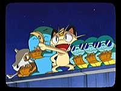

N.O.M 今回のソフトはどういったところからスタートしたんでしょうか。
石原 まずポケモンのゲームとしては、これがニンテンドーゲームキューブ（以下：GC）で出るはじめてのソフトだということですね。NINTEND64からGCにハードが移って、そこで一体なにが出来るのか、という部分からのスタートでした。これはまずプレイヤーがいて、テレビのなかにテレビがあって、それを一緒に観るピカチュウがいる。そのなかでコミュニケーションしていくというゲームなんです。だいたい、"テレビのなかにテレビ"っていうこと自体が不思議な感じでしょう。それから3Dで構成されたゲームの画面のなかで2Dのアニメ番組を見るということも。それらはすごく不思議で、これまでにない新しい部分だと思うんです。それをゲームとして出して、プレイヤーにどう捉えてもらうか、どう納得してもらうかというのは、いままでにない新しい試みなんですよ。
N.O.M 「なにか新しいものを」ということで作られたんですね。
石原 いまあるゲームのなかには、「こうすればクリアー」みたいなものがたくさんありますが、そういう決まりきったものじゃなく、もっと違うもの、もっと広がったものがこれからは必要なんじゃないかなと。テレビにしても、世界中のテレビ番組を見ると、テレビショッピングやクイズ番組、天気予報はなぜか必ずあるんですよね。それってなんなの？ なんでそれを観るの？ という目線からというのもありますね。 このゲームをちょっと違う視点から見ると、テレビやゲームだけでなく、ネットや紙媒体といったいわゆる"メディア"というものが、いまの時代にどうやって人間と関わっているのか、というような、そういった大きなテーマもこめていたりするんです。難しくするつもりはないんですが。
N.O.M 制作は「テレビのなかのテレビで番組が流れていて…」というところから始まったんですか？
石原 そうですね。それと、ピカチュウと一緒にテレビを観る、楽しむ、まったりするというテーマですね。それは「ピカチュウさえ出しておけば、そのかわいさで大抵のことは許されるだろう」ということで(笑)。
N.O.M ゲーム内で流れているアニメ番組は、実際にアニメ版を作っているプロダクションで制作したんですか？
石原 そうです。アニメの制作会社の方へ、「こういうソフトを作りたいので」と話を持って行って、完全オリジナルの作品を一本作ってもらいました。今回のゲームは、ポケモンたちの声もアニメ版の声優さんにやってもらっています。
ピカチュウの声優さんである大谷育江さんも、ものすごい量のセリフを収録してくださってるんです。
N.O.M GCならではの味を出したという点では、どういった部分が挙げられますか？
石原 GCは、DVD並みの高品質の音声と画像の再生を出来るわけです。だからオリジナルアニメを入れて、「こういうこともGCでは出来るんだよ」というのを見せたんですね。また、ソフトにはカードｅも同梱されていて、そちらへも拡張することが可能です。GCとその周辺機器との連動に関しては、任天堂のGCならではの、また"ポケモン"という素材をフルに活用したものになっていますね。
N.O.M 開発にはどれくらいかかりましたか？
石原 ゲームとして作り始めた…というと、約一年ほどです。それ以前の準備期間等も含めると、結局三年ほどかかっているんじゃないでしょうか。スタッフはアンブレラに14名、その他にやってもらった外部の人たちなんかは、もっとたくさんいます。
N.O.M 今回、開発の上で最も苦労した点はどこでしょう？
小澤 僕たちはGCでのソフト制作はこれが初めてだったので、なにもわからなくて。作り始めてからは、「ゲームのなかは3Dの世界で、そのなかにテレビがあって、テレビでは2Dアニメを流している」という所ですね。それってやっぱりおかしな世界なんですが、それをひとつのものとして、如何にまとめ上げるかというのは、本当に苦労しました。
松村 でも開発に関しては、意外にやりやすかったんです。要素を詰め込むにしても、やってみると意外と入るものなんだな〜ってことで、最初からリッチにたくさん詰め込んだんです。まあ、あとから「すみません、削らないといけなくなりました…どれを削りましょう」みたいなことになったんですけど(笑)。
小澤 以前作った『ピカチュウげんきでちゅう』のときは、細かい制限がいろいろあったんです。GCでは「とりあえず作って」みたいな感じで、まず作ってからいろいろと変えていく…、というようなやり方ができたんで、作りやすかったですね。 |